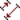

This toolbar is only active when a table is selected. It allows the quick access to the commands of the Plot menu which are used for the creation of new plots.
Table 6.3. Plot toolbar commands
| Icon | Command | Key | Description |
|---|---|---|---|
| Access to the submenus for lines/Symbol plot types. | |||
| Line command | Build a graph with data plotted as lines | ||
| Scatter command | Build a graph with data plotted as scatter of points | ||
| Line+Symbol command | Build a graph with data plotted as lines with symbols | ||
| Special Line/Symbol→Splines command | Build a graph with data plotted as smoothed lines | ||
| Special Line/Symbol→Vertical Drop Lines command | Build a graph with data plotted as vertical drop lines | ||
| Special Line/Symbol→Horizontal Steps command | Build a graph with data plotted as horizontal step lines | ||
| Special Line/Symbol→Vertical Steps command | Build a graph with data plotted as vertical step lines | ||
| Access to the sub-menu for columns and rows plots | |||
| Vertical Bars command | Build a graph with data plotted as columns | ||
| Horizontal Bars command | Build a graph with data plotted as rows | ||
| Area command | Build a graph with data plotted as lines with a filling of areas. | ||
| Statistical graphs→Histogram command | Build a graph with data plotted as an histogram. | ||
| Box Plot command | Build a graph with data plotted as an histogram. | ||
|  | access to the sub-menu for vector plots. | ||
| Vectors XYXY command | Build a graph with data plotted as vectors defined by two points. | ||
| Vectors XYAM command | Build a graph with data plotted as vectors defined by an origin and a direction. | ||